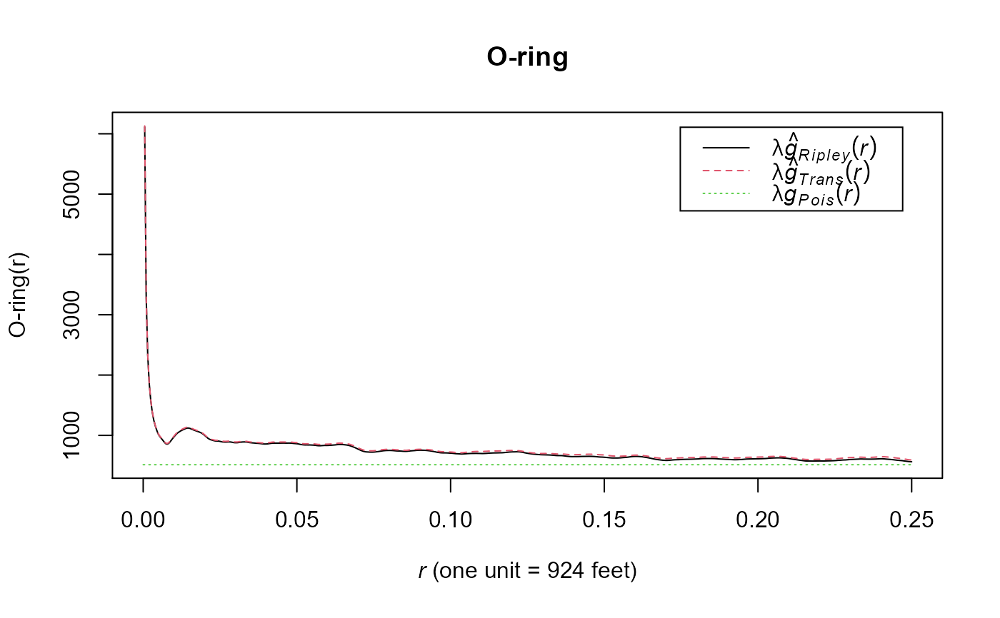

Calculates the inhomogeneous O-ring point pattern statistic (Wiegand & Maloney 2004)
The function K(r) is the expected number of points in a circle of radius r centered at an arbitrary point (which is not counted), divided by the intensity l of the pattern. The alternative pair correlation function g(r), which arises if the circles of Ripley's K-function are replaced by rings, gives the expected number of points at distance r from an arbitrary point, divided by the intensity of the pattern. Of special interest is to determine whether a pattern is random, clumped, or regular.
Using rings instead of circles has the advantage that one can isolate specific distance classes, whereas the cumulative K-function confounds effects at larger distances with effects at shorter distances. Note that the K-function and the O-ring statistic respond to slightly different biological questions. The accumulative K-function can detect aggregation or dispersion up to a given distance r and is therefore appropriate if the process in question (e.g., the negative effect of competition) may work only up to a certain distance, whereas the O-ring statistic can detect aggregation or dispersion at a given distance r. The O-ring statistic has the additional advantage that it is a probability density function (or a conditioned probability spectrum) with the interpretation of a neighborhood density, which is more intuitive than an accumulative measure.
o.ring(x, inhomogeneous = FALSE, ...)
| x | spatstat ppp object |
|---|---|
| inhomogeneous | (FALSE/TRUE) Run homogeneous (pcf) or inhomogeneous (pcfinhom) |
| ... | additional arguments passed to pcf or pcfinhom |
plot of o-ring and data.frame with plot labels and descriptions
Wiegand T., and K. A. Moloney (2004) Rings, circles and null-models for point pattern analysis in ecology. Oikos 104:209-229
Jeffrey S. Evans <jeffrey_evans@tnc.org>
#>#> #>#> #> #>#>#>#> #>#> #> #>#> #> #>#> #> #>#>#> #>#> #> #>#>#>#> #>#> #> #>